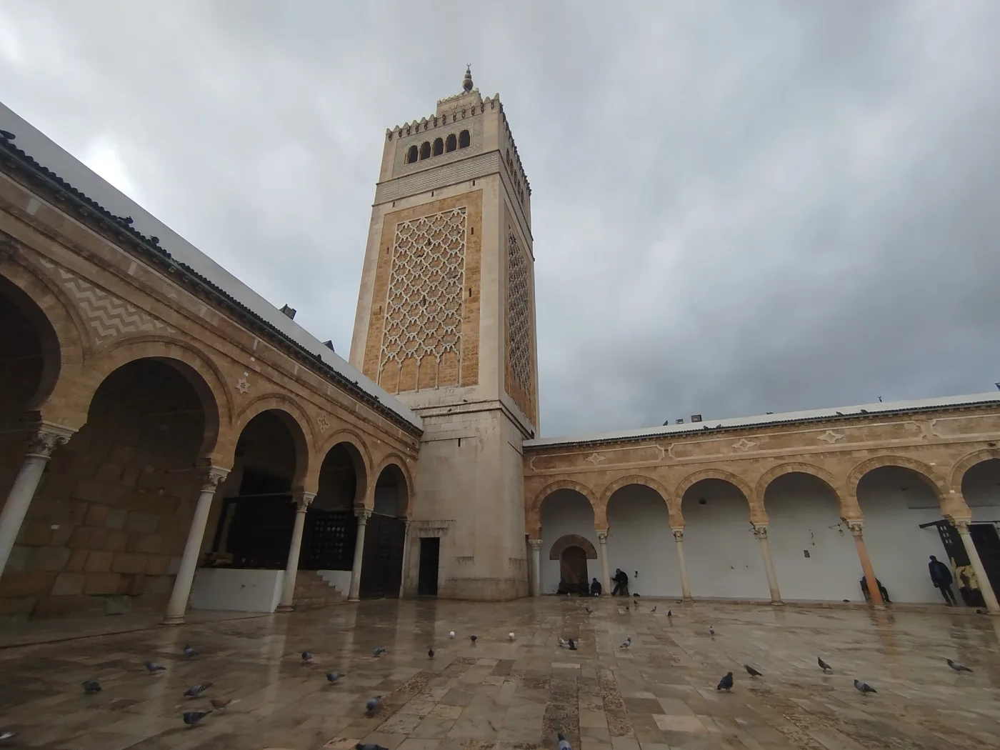
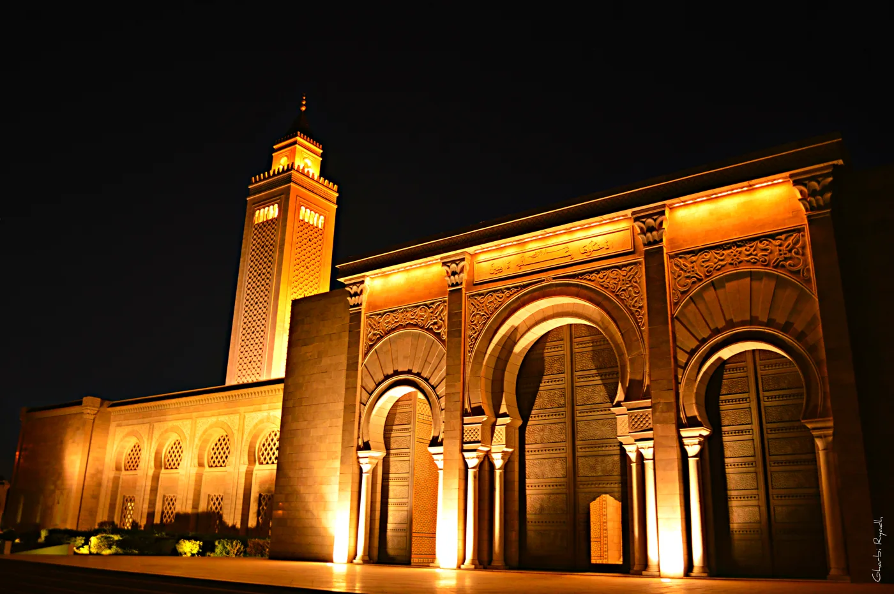

Accueil › Blog › La Zitouna et Malek Ibn Anas : les plus belles et plus grandes mosquées de Tunisie
Maghreb · 6 min de lecture · 2026-02-23
La Zitouna et Malek Ibn Anas : les plus belles et plus grandes mosquées de Tunisie
Poser la question de « la plus belle et la plus grande mosquée de Tunisie » revient en réalité à en désigner deux : la mosquée Zitouna, cœur spirituel et intellectuel de la médina de Tunis depuis plus de treize siècles, et la mosquée Malek Ibn Anas, géant contemporain de Carthage qui détient aujourd'hui le record de capacité du pays.


Zitouna, « l'olivier » au cœur de la médina
Fondée à la toute fin du VIIe siècle et considérablement agrandie sous les Aghlabides au IXe siècle, la Grande Mosquée Zitouna (« mosquée de l'olivier ») est la plus ancienne mosquée de Tunis et l'une des plus vastes du pays, avec près de 5 000 m² au cœur de la médina classée à l'UNESCO. Sa salle de prière hypostyle, portée par plus de 160 colonnes antiques réemployées (marbre, granit, porphyre), et son minaret carré de style almohade en font l'un des monuments les plus photographiés de Tunisie.
Une université presque aussi vieille que la mosquée
Comme Al Quaraouiyine à Fès ou Al-Azhar au Caire, Zitouna n'est pas seulement un lieu de culte : dès le VIIIe siècle, on y enseigne le droit, la grammaire et les sciences religieuses, ce qui en fait l'un des plus anciens foyers d'enseignement supérieur du monde musulman. Cette double vocation, spirituelle et savante, a irrigué toute l'histoire intellectuelle tunisienne jusqu'à la création de l'université Zitouna moderne, qui perpétue cet héritage.
Malek Ibn Anas, le nouveau record de capacité
À une vingtaine de kilomètres de là, sur la colline de Carthage, la mosquée Malek Ibn Anas — aussi connue sous le nom de mosquée El Abidine — est aujourd'hui la plus grande mosquée de Tunisie par sa capacité d'accueil, de l'ordre de plusieurs dizaines de milliers de fidèles esplanade comprise. Achevée au début des années 2000, elle reprend le vocabulaire almohade classique (arcs outrepassés, minaret élancé, portails sculptés) à une échelle monumentale, dans la lignée des grandes mosquées nationales bâties ailleurs dans le Maghreb au tournant du XXIe siècle.
Deux réponses à une même question
Zitouna l'emporte sur l'ancienneté, le rayonnement intellectuel et la densité patrimoniale ; Malek Ibn Anas l'emporte sur la superficie et la capacité d'accueil. Plutôt qu'un classement, les deux édifices racontent la même histoire sous deux angles : celle d'un pays qui n'a jamais cessé de bâtir des mosquées, du VIIe siècle à aujourd'hui, sans rompre avec son vocabulaire architectural nord-africain — arcs en fer à cheval, minarets carrés, portails sculptés — hérité de Kairouan et transmis de génération en génération de bâtisseurs.
À découvrir
Mosquées citées dans cet article
À propos du contenu de cette page — Ce site propose un contenu éditorial et culturel rédigé avec soin et le souci du respect des traditions religieuses concernées ; il ne constitue pas un avis théologique ou une source d'autorité religieuse. Malgré nos vérifications, des erreurs, imprécisions ou approximations peuvent subsister. Si vous en repérez une, merci de nous la signaler via la page Contact ou par e-mail à qibla.mosk@gmail.com — nous la corrigerons avec gratitude.